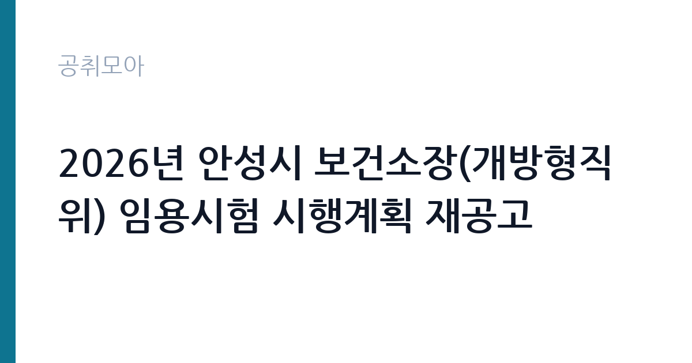

[지자체] 2026년 안성시 보건소장(개방형직위) 임용시험 시행계획 재공고
경기도 안성시 · 경기 · 마감 2026-11-11 (D-12) · 출처 나라일터

한눈에 보는 모집 조건
| 기관 | 경기도 안성시 |
|---|---|
| 공고명 | 2026년 안성시 보건소장(개방형직위) 임용시험 시행계획 재공고 |
| 고용형태 | 임기제 |
| 근무지 | 경기 |
| 게시일 | 2026-10-30 |
| 마감일 | 2026-11-11 (D-12) |
지원자격, 이렇게 읽으세요
- 일반직(지방과학기술서기관) 또는 지방일반임기제(개방형 4호) 1명
- 접수 ~2026-11-11 마감
- 세부 조건은 원문 공고문 확인
임기제공무원은 공무원 신분이지만 임용 기간이 정해져 있습니다. 전문성이 필요한 업무에 채용되며 임용 기간과 연봉등급이 공고문에 명시됩니다. 임기 중에는 공무원으로서의 복무 규정과 이해충돌 방지 의무가 적용됩니다. 이번 공고는 경기도 안성시에서 직접 진행하는 자체 전형으로, 응시자격과 제출서류는 공고문에 항목별로 제시됩니다. 개방형직위는 보건·의료 분야 경력과 관련 자격, 조직 관리 경험이 함께 요구되는 경우가 많습니다. 지방공무원 임용 요건과 개방형직위 운영 규정을 함께 충족해야 하고, 응시자격과 직무수행요건은 붙임 명세서에 정리되어 있습니다. 접수 기간은 2026년 11월 9일부터 11일까지이고, 접수처는 안성시청 행정과 인사팀입니다. 선발은 서류전형과 면접시험으로 진행됩니다. 서류는 접수 마감 이후 보완이 되지 않으므로 자격 요건과 증빙 서류를 마감 전에 모두 갖춰야 합니다. 공고문에 명시된 우대 사항은 해당 여부를 확인해 증빙을 첨부해야 가점이 반영됩니다. 자격증은 유효 기간과 등록 상태를 확인해야 합니다. 갱신이 필요한 자격이라면 갱신 여부를 먼저 점검하십시오.
이 공고의 포인트
이 공고의 첫 번째 포인트는 고용 형태입니다. 임용 기간이 정해져 있지만 공무원 신분으로 복무 규정이 적용되고, 전문성이 인정되면 재임용이나 유사 직위 지원에 도움이 됩니다. 두 번째는 업무 범위가 명확하다는 점입니다. 보건소장(개방형직위) 직무로 채용되므로 배치 이후 담당 업무가 크게 흔들리지 않습니다. 세 번째는 근무지입니다. 경기 지역 근무로 접근성은 좋지만 그만큼 지원자가 몰리는 지역이므로 경쟁률을 넉넉히 잡아야 합니다. 직무 특성이 분명해 본인의 경험과 맞는지 빠르게 판단할 수 있습니다. 같은 직무로 함께 올라온 공고 4건 가운데 마감이 중간에 위치하므로 다른 공고와 일정이 겹치는지 확인하십시오. 다만 선발 인원이 1명으로 많지 않아 자격을 갖춘 지원자가 몰리면 경쟁률이 높아질 수 있습니다.
전형은 어떻게 진행되나
전형은 서류심사와 면접심사를 기본으로 하고 직무에 따라 필기나 실기, 체력검정이 추가됩니다. 서류 단계에서는 응시자격 충족 여부와 제출서류 형식을 확인하며 이 단계에서 탈락하는 지원자가 적지 않습니다. 면접은 직무 이해도와 경험을 확인하는 방식으로 진행되고 발표는 개별 통보나 홈페이지 게시로 이뤄집니다. 최종합격 이후에는 결격사유 조회와 채용 신체검사가 이어지며 이 절차에서 문제가 확인되면 합격이 취소될 수 있습니다. 구체적인 전형 단계와 배점은 공고문에 표로 정리되어 있으니 원문을 기준으로 준비하십시오. 제출서류 원본은 최종 단계에서 다시 요구되는 경우가 있어 사본과 함께 보관하십시오.
원문에서 확인한 전형 방식
우수인재의 공직유치를 위한 안성시 보건소장(개방형직위) 임용시험을 붙임과 같이 재공고하여 시행하오니, 많은 응시 바랍니다. 1. 채용분야 및 인원: 안성시보건소장(개방형직위) 1명 2. 접수기간: 2026. 11. 9.(월) ~ 11. 11.(수) 3. 접수방법: 방문접수, 우편접수(등기 익일특급) 4. 접 수 처: 안성시청 행정과 인사팀(안성시청 본관 2층) 5. 선발방법: (1차)서류전형, (2차)면접시험 6. 담당부서: 안성시청 행정과(☎031-678-2154) 붙임 1. 안성시 보건소장(개방형직위) 임용시험 시행계획 재공고 1부. 2. 직무수행요건 명세서 1부. 끝.
이런 분께 추천해요
- 보건·의료 분야 경력과 자격을 갖춘 분
- 보건 사업 기획과 조직 운영 경험이 있는 분
- 방문 또는 등기우편으로 기한 내 접수할 수 있는 분
지원 전 체크리스트
- 응시자격 요건과 경력 기준을 충족하는가 — 경력은 증명서로 입증해야 합니다
- 임용 기간과 연봉등급, 근무 시간 조건을 확인했는가
- 제출서류 목록을 모두 준비했는가 — 누락 시 서류 단계에서 탈락합니다
- 접수 마감 2026-11-11 이전에 접수 방식을 확인해 제출했는가
모집 일정과 제출 타이밍
공고 게시일은 2026-10-30, 접수 마감은 2026-11-11입니다. 준비 기간은 약 12일로 서류 준비와 자격 증빙을 함께 처리하기에는 넉넉하지 않은 편입니다. 첫 이틀 안에 공고문과 첨부 서식을 내려받아 요건을 확인하고 남은 기간에 증빙 서류를 발급받는 일정이 현실적입니다. 면접은 서류 합격자 발표 후 짧은 간격으로 진행되는 경우가 많으므로 서류 제출과 동시에 면접 준비를 시작하는 편이 안전합니다. 마감일에는 접수 시스템이 몰리므로 하루 전까지 제출을 마치는 것이 좋습니다. 임용 예정일이 빠르게 잡히는 공고이므로 현재 일정과 겹치지 않는지 미리 확인하십시오. 경기 지역 근무지는 사업소나 시설이 외곽에 있는 경우가 많아 차량 통근 가능 여부를 확인해야 합니다. 마감까지 2주 안팎이 있어 준비할 시간은 있지만 미루면 촉박해집니다. 선발 인원이 한두 명 수준이라 지원자 개개인의 서류 완성도가 그대로 평가에 반영됩니다.
직무 이해하기: 지자체
지방자치단체는 지역 행정과 복지, 시설 운영을 담당합니다. 부서별로 사업을 수행하고 결원이나 신규 사업에 따라 임기제와 기간제 인력을 채용합니다. 조례와 자체 인사 규정에 따라 채용 절차가 진행됩니다. 보건소장은 지방자치단체 보건소의 장으로 지역 보건 사업을 총괄합니다. 감염병 대응과 방역, 모자보건, 만성질환 관리, 건강증진 사업을 기획하고 운영하며, 관내 의료·복지 기관과 협력해 사업을 연결합니다. 보건 사업 예산과 인력을 관리하고, 지역 보건 지표를 바탕으로 사업 우선순위를 정합니다. 안성시는 재공고를 낸 상태로, 임용 기간과 선발 방법이 원문에 제시되어 있습니다. 접수는 방문 또는 등기우편으로만 받습니다. 업무는 혼자 처리하기보다 부서 단위로 나눠 진행되므로 담당 구역과 협업 범위를 입사 초에 확인하는 것이 중요합니다. 업무 강도와 근무 시간대는 부서 배치에 따라 달라지므로 면접에서 확인하는 것이 가장 정확합니다.
자기소개서 작성 팁
지원서는 보건 사업 운영 경력을 성과 중심으로 정리하는 것이 핵심입니다. 담당 사업과 대상 인원, 개선한 지표를 수치로 제시하십시오. 조직 관리와 예산 운영 경험을 함께 써야 합니다. 이 지역의 보건 현황 진단과 우선 추진할 사업을 한 문단으로 정리하면 준비도가 드러납니다. 구성은 지원 동기, 직무 경험, 기여 방안 순서가 무난합니다. 지원 동기는 경기도 안성시의 사업 중 본인이 관심을 가진 부분을 한 가지로 좁혀 서술하고 추상적인 표현은 줄이십시오. 직무 경험은 담당했던 업무와 규모, 결과를 수치로 제시하면 설득력이 올라갑니다. 기여 방안은 입사 후 첫 3개월과 1년 계획으로 나눠 쓰면 준비도가 드러납니다.
면접 준비 포인트
면접에서는 지역 보건 사업의 방향과 조직 운영 계획을 확인합니다. 관내 보건 지표를 어떻게 진단했는지, 한정된 자원으로 어떤 사업을 우선하겠는지 묻습니다. 유관 기관 협력 경험과 예산 운영 경험을 구체적으로 답하십시오. 재공고인 만큼 앞선 공고와 달라진 요건을 확인해 두면 좋습니다. 답변은 상황, 판단, 조치의 순서로 정리하면 전달이 분명해집니다. 모르는 질문에는 모른다고 밝히고 확인 방법을 제시하는 편이 억지 답변보다 낫습니다. 마지막에는 근무 의사와 함께 2026-11-11 이후 일정에 언제든 응할 수 있다는 점을 전달하십시오. 모르는 질문에 추측으로 답하면 감점 요인이 되므로, 확인 후 답하겠다고 밝히는 편이 안전합니다.
급여·근무조건 읽는 법
경기도 안성시의 구체적인 보수 수치는 이 공고 원문의 처우 항목과 보수표에서 확인해야 합니다. 공시 자료로 확인되지 않은 금액은 이 글에서 추정해 제시하지 않습니다. 알리오 2025년 결산 공시 기준 공공기관 전체 일반정규직 1인당 평균보수는 7,376만 9천원, 신입사원 평균초임은 4,031만 6천원입니다(무기계약직 미포함). 임기제공무원의 보수는 지방공무원 또는 국가공무원 보수규정상 연봉등급제를 적용받습니다. 연봉은 등급별 범위에서 경력과 직무 난이도를 반영해 결정되고, 개방형 직위는 별도 기준이 적용되기도 합니다. 시간선택제는 주당 근무 시간에 비례해 연봉이 산정됩니다. 구체적인 등급과 금액은 공고문에서 확인하십시오. 2026년 적용 최저임금은 시급 10,320원, 월 환산 2,156,880원(주 40시간·209시간 기준)입니다. 고용노동부 고시 제2025-47호로 확정된 금액입니다. 공고문에 금액이 제시되지 않은 항목은 원문 보수표나 처우 설명에서 확인해야 하며 확인되지 않은 수치는 쓰지 않는 것이 원칙입니다. 비교할 때는 월 급여뿐 아니라 상여·명절휴가비·복지포인트·초과근무수당까지 포함한 연간 총액으로 계산하십시오. 기간제라면 계약 기간 동안의 총액을, 무기계약이라면 호봉 상승과 정년까지의 누적 소득을 기준으로 판단하는 편이 정확합니다.
자주 묻는 질문
- 선발 인원은 몇 명인가요?
공고문 기준 1명입니다. 직종별로 인원이 나뉘는 경우가 있으니 모집분야 항목을 함께 확인하십시오. - 근무지는 어디인가요?
경기 지역의 경기도 안성시 소속 근무지입니다. 세부 주소와 출퇴근 조건은 원문 공고문에서 확인할 수 있습니다. - 보수는 얼마인가요?
채용 신분(임기제공무원)과 기관 임금 규정에 따라 정해지며 구체적인 금액은 공고문 처우 항목에 제시됩니다. 금액이 공개되지 않은 경우에는 원문의 보수표를 확인하십시오.
함께 보면 좋은 공고
[지자체] 2026년 상록수보건소장(개방형직위) 임용시험 시행계획 2차 재공고 — 마감 2026-11-16[지자체] 2026년 제5회 김포시 임기제공무원 임용시험 공고 — 마감 2026-11-12[지자체] 2026년도 제3회 나주시의회 임기제공무원(시간선택제임기제 라급) 임용시험 시행 공고 — 마감 2026-11-12출처: 나라일터 공개정보를 바탕으로 공취모아가 정리한 안내글입니다. 모집 조건·일정은 변경될 수 있으니 지원 전 반드시 원문 공고문을 확인하세요. 본 글은 정보 제공용이며 합격을 보장하지 않습니다.